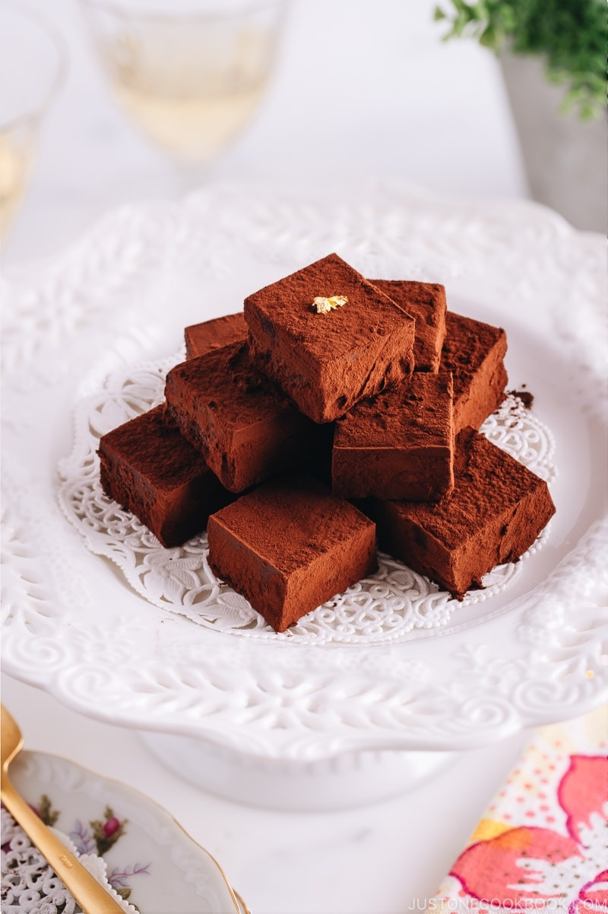

Nama Chocolate is rich, smooth, and moist, with a silky texture that practically melts in your mouth. The good news is that you don't have to fly to Japan to enjory the luxurious sweet. With this recipe, you can make your chocolate dream come true today!
This recipe is taken from Nami's justonecookbook.